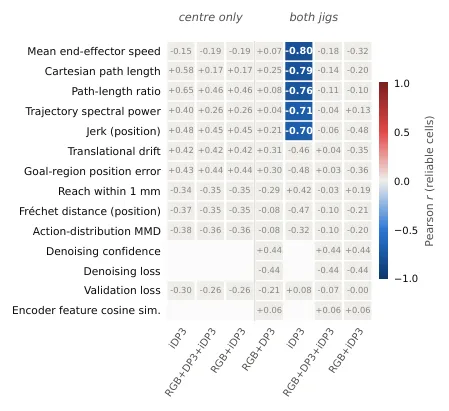

从遥操作到长程灵巧性：用 281 个策略和约 1700 次真机试验评估视觉运动技能与离线代理指标
From Teleoperation to Long-Horizon Dexterity: Evaluating Visuomotor Skills and Offline Proxies for Dexterous Manipulation
同一接触密集任务上系统消融 281 个策略：iDP3 加点云 ROI 裁剪在两个夹具上都 100% 插入，追平 3.3B 的 π0.5 而推理内存只要 1/8；67 个离线指标仅 5 个平滑度指标在 iDP3 家族内有效，不能跨家族替代真机。
policies / real-robot trials
insert success
offline metrics passing
parameters
作者、单位与技术谱系 · Research context
作者与单位
研究脉络
- DP3（Ze et al., 2024）方法基座关系：DP3 的 PointNet 点云编码与 DDIM 动作头是点云基线，本文的机器人基座系与逐层归一化消融直接改在这条实现上。[论文 §2 / Appendix D]
- iDP3（Ze et al., 2024）方法上游关系：iDP3 的多阶段点云编码器是本文最强紧凑基线；ROI 裁剪把它从 0 提到 100% Pick。[论文 §3 / Table 1]
- π0.5（Physical Intelligence, 2025）方法上游关系：π0.5 作为大规模预训练 VLA 对照，用 LoRA 微调后与 69M 点云策略比较成功率与内存。[论文 §2 / Table 1]
合作网络
- Analog Devices EdgeAI Robotics → 硬件与工程支持方Analog Devices EdgeAI Robotics → NVIDIA / Tesollo / Franka Robotics / MANUS关系：致谢中的硬件与工程支持[论文致谢]
- Analog Devices → 实验平台Analog Devices EdgeAI Robotics → Franka Research 3 + Tesollo DG5F关系：实验平台依赖[论文 Appendix A]
六位作者同属 Analog Devices EdgeAI Robotics，这是论文首页的署名事实；与 NVIDIA 等厂商只有致谢关系，不写成合作署名。
方法本质拆解 · What actually changed
是不是微调？
两类都有：DP/DP3/iDP3/flow/ACT 从演示数据训练，最多用 ImageNet 或 R3M 初始化图像编码器；π0.5 是在大规模跨本体数据上预训练后用 LoRA 微调。论文的重点不是提出新训练目标，而是控制其他变量、只改一个设计项。
有没有额外约束？
没有新增损失或几何约束。被比较的“约束”是输入表征层面的：点云用相机系还是机器人基座系、是否做 ROI 裁剪、是否在 PointNet 每层后归一化，以及动作是绝对还是相对、旋转用 Euler 还是 6D。
推理/后端到底做了什么？
策略以 10 Hz 输出动作块，前面接 FoundationPose 识别夹具、经典点到点运动负责两段搬运，学习策略只负责抓取与插入。没有测试时优化或在线搜索；10 Hz 重放与 30 Hz 重放结果一致，说明降频没有改变任务结果。
方法本质是什么？
本质是一套“真机配对消融 + 四级评分”的实验方法，用来判定性能来自表征还是调参。它改变的是观测/动作进入网络的形式和评测协议，没有提出新的策略结构；结论是 ROI、固定参考系、编码器内归一化与绝对动作这几项表征选择主导真机成功率。
输入（腕部 RGB-D / 点云 + 本体状态）→ 在固定任务与固定评分下只改一个表征或训练项 → 用约 1700 次真机试验的配对成功率与 Fisher 检验判断增益来源。

桥接价值Bridge
桥接价值
具身决策的论文常用“验证损失下降”暗示策略变好，但真机成功率往往不跟随。这篇把 7 个策略家族放在同一任务、同一评分协议下，逐项改变一个组件并记录所有训练设置差异，给出了“表征选择 > 优化器/采样器”的定量证据。对我们的价值在于方法学：任何“新模块提升操作成功率”的主张，都应先做这种单变量配对试验，并报告每次试验的样本量与置信区间。
方法与模块Method
方法摘要
任务被拆成四段：两段已知位姿间的经典运动，加两段学习技能（抓取、插入）。平台是 Franka Research 3 配 Tesollo DG5F 五指手，腕部 RealSense D455 提供 RGB-D，遥操作频率 30 Hz，策略以 10 Hz 运行。策略家族覆盖 RGB Diffusion Policy、DP3、iDP3、flow matching、ACT、EquiBot 与 π0.5；每组 before/after 只改一个设置，按 Fisher 精确检验比较，评分按 Fail/Grasp/Pick/Insert 四级嵌套统计。
可迁移模块
第一是可复用的配对消融表：把数据选择、观测处理、动作表征、网络与训练逐行列清楚，任何两组只允许差一行。第二是“单帧分别预测再取 max/sum”式的下界思路在这里体现为对离线指标的家族内检验：先固定策略家族，再看指标是否还能排序。第三是紧公差插座的鲁棒性测试，它把“平均成功率”还原成“边界条件下还剩多少”，比只报 nominal 更有信息量。

证据Evidence
关键证据与数字
Table 1：iDP3 加点云 ROI 裁剪在两个夹具上 Pick 100%、Insert-given-pick 100%，模型 69M、训练 6.0 GB、推理 1.0 GB；π0.5 两视角插入同样 100%，但 3.3B 参数、训练 24 GB、推理 8 GB。单变量消融（§3）：ROI 裁剪把 iDP3 Pick 从 0 提到 100%，PointNet 逐层 LayerNorm 把 DP3 插入从 0 提到 70%，机器人基座系把 PointNet Pick 从 20 提到 100%，绝对动作加 6D 旋转把两视角 π0.5 插入从 30 提到 100%（Euler 下是 89 到 100%）。67 个离线指标只有 5 个在 21 个 iDP3 插入 checkpoint 上通过多重检验，r=−0.70 到 −0.80；没有任何指标能跟踪 Pick。鲁棒性：iDP3 在光照、背景、场地、阳光下保持 80–100% 插入，紧公差插座降到 0–40%。
边界与下一步Limits & Next Step
边界与风险
最大边界是任务单一：只有 RJ45 抓取/插入，物体可变形、目标插座固定，结论未必迁移到柔性体、多物体或移动操作。技能分解、双视角、恢复示例这三项在最强系统里同时出现，作者也承认没有独立隔离，因此不能把“分解一定有效”当成因果结论。试验次数并不均衡，失败配置常只跑 2–3 次，成功率区间很宽；离线指标的相关性也只在 iDP3 家族内成立，跨 RGB/点云家族会变弱甚至反号。
下一步实验
第一步在我们自己的接触任务上复刻“单变量配对 + 四级评分”，先固定数据与算力预算，再比较表征改动。第二步把“预测轨迹平滑度”作为离线筛选器，但只在同一策略家族内使用，并同时保留 Pick 阶段的真机小样本验证。第三步做任务外推：把 ROI 裁剪与基座系转换搬到 GNSS/视觉融合的抓取或对接任务，检验“把点云换到固定参考系”是否同样比调优化器更有效。